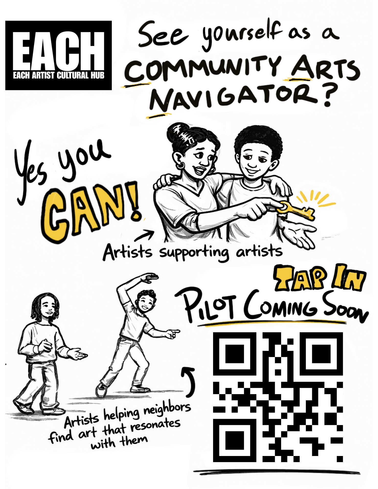
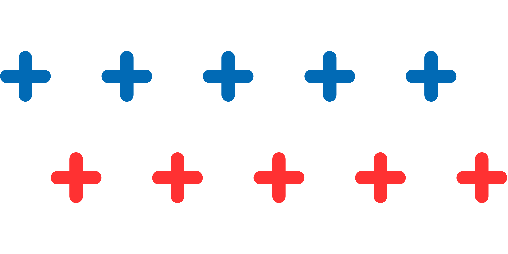

Artists supporting artists. Artists helping neighbors find the art that speaks to what they're carrying.
Community Arts Navigators (CANs) are trained artists who work in two directions. They act as peer mentors supporting fellow artists — helping them find space, opportunity, and one another. And they act as cultural care specialists for their neighbors — helping people find the art and artists who speak to what they're carrying: questions of grief, place, belonging, politics, identity, meaning, joy.
This program is rooted in the Community Health Worker model, which has long succeeded by training and stipending trusted community members to bridge informal knowledge and formal systems. Arts and culture have separately been 'prescribed' as care. CANs draw on both lineages and extend them into the wider work of helping a community find itself through art.


Listens to neighbors, learning what they're carrying and pointing them toward the artist, the show, the gallery that might offer something new and meaningful
Weaves relationships between artists, venues, small businesses, and residents
Stewards shared spaces — matching artists who need room with hosts who have it
Surfaces opportunities — grants, gigs, calls, free resources — in ways that actually reach people
Hosts gatherings that build trust and spark collaboration
Listens and reports back so EACH and the wider field learn what artists and communities actually need
We're in pilot mode. As we gather resources, we're also gathering interest from artists who see themselves in this role.